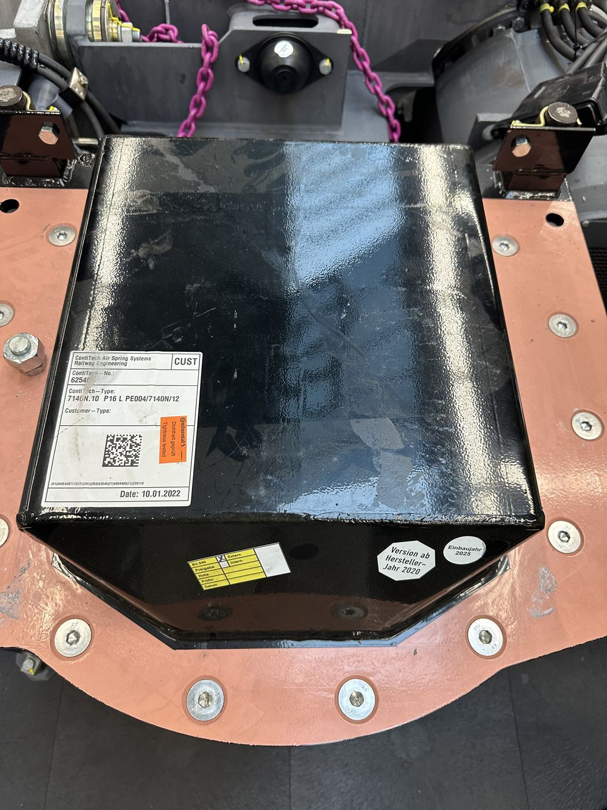

Schwarzer Luftfederbalg zwischen Drehgestellrahmen und Wagenkasten.
Luftfeder
Bauteil auf der Seite „Drehgestell“
Gummikonusfeder mit Druckluftpolster zwischen Drehgestell und Wagenkasten. Aufgabe: Federung des Wagenkastens und automatische Niveauregelung bei wechselnder Zuladung.
Anders als eine reine Stahlfeder besitzt die Luftfeder eine nichtlineare, last-abhängig einstellbare Federkennlinie: Ein Niveauregelventil hält die Wagenkastenhöhe unabhängig von der Zuladung konstant, indem es je nach Einfederung Luft nachfüllt oder ablässt.
Zusätzlich wird die Luftfeder als „Barometer“ genutzt: Der Luftdruck im Balg korreliert direkt mit dem aufliegenden Gewicht. Er wird alle 2 Sekunden gemessen und erlaubt eine Abschätzung der Fahrgastzahl – bei einem Fußballspiel wurden so schon bis zu 100 t Zusatzgewicht registriert. Die Zeitreihe dieser Druckmessung wird u. a. in Python ausgewertet, um den Punkt zu bestimmen, ab dem der Druck für die Bremsanlage unterschritten wird.
